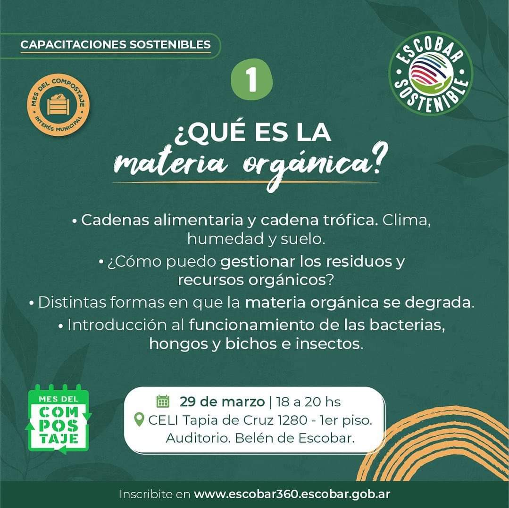
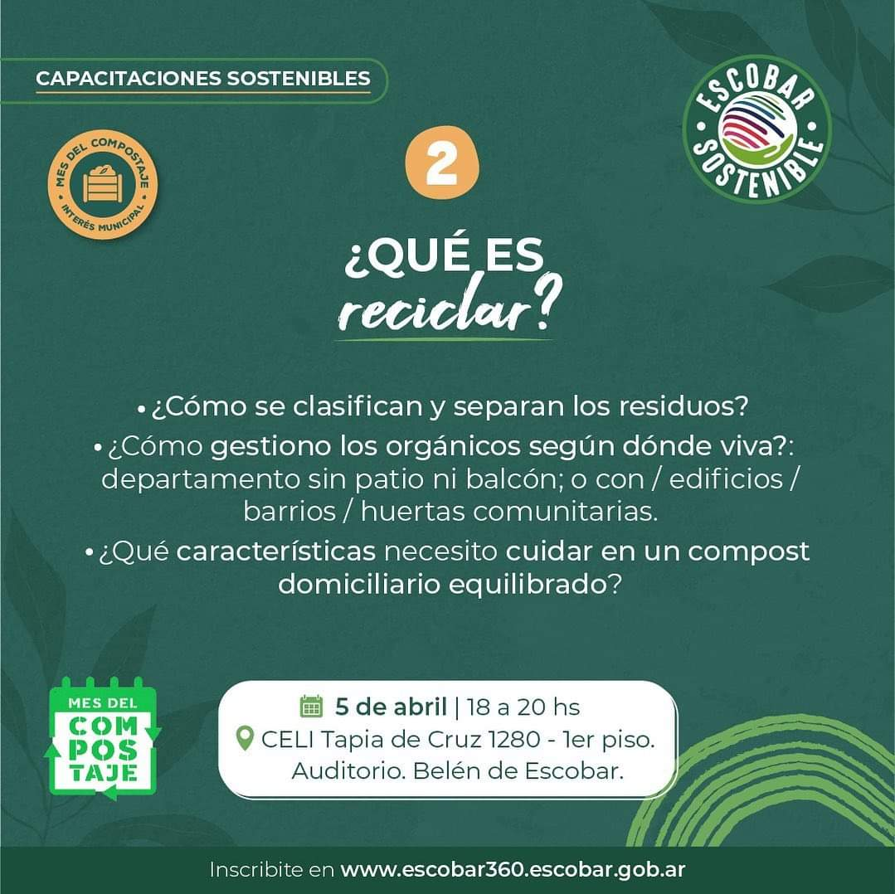
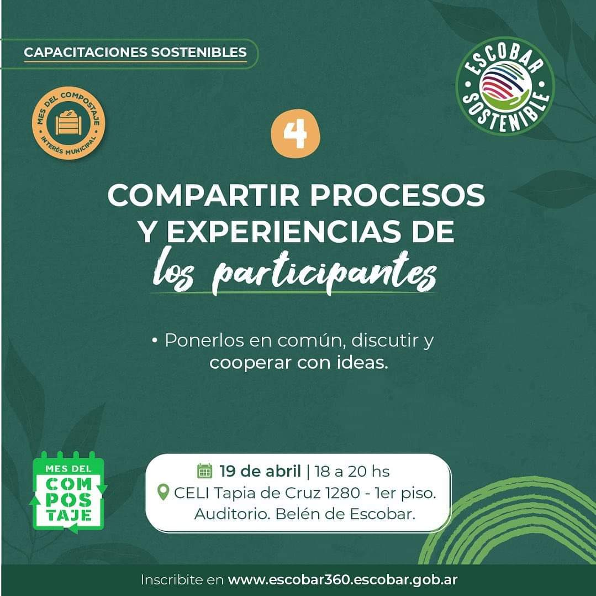

INSCRIPCIÓN ABIERTA- CURSO DE COMPOSTAJE: MATERIA ORGÁNICA Y SUELO
👉🏻 Invitamos a todos los vecinos y vecinas del partido de Escobar a sumarse al curso de Compostaje: materia orgánica y suelo 🌿 El taller es gratuito y estará a cargo de Mariana Jaroslavsky, de la Coordinación General del Mes del Compostaje🙋
🌐 La inscripción se realiza a través de la plataforma Escobar 360° en la sección “Capacitaciones Sostenibles” 📚
🗓 Te esperamos el próximo martes 29 de marzo (de 18 a 20 horas) en el CELI Tapia de Cruz 1280- 1er. Piso - Auditorio - Belén de Escobar.📍
☀️ La sostenibilidad la hacemos entre todxs, es por eso que lxs invitamos a sumarse a las distintas propuestas de Capacitaciones Sostenibles coordinadas por la Dirección de Innovación del Municipio de Escobar y fomentar el cambio hacia una #CulturaRegenerativa
#CapacitacionesSostenibles
#MesDelCompostaje
#YoComposto



